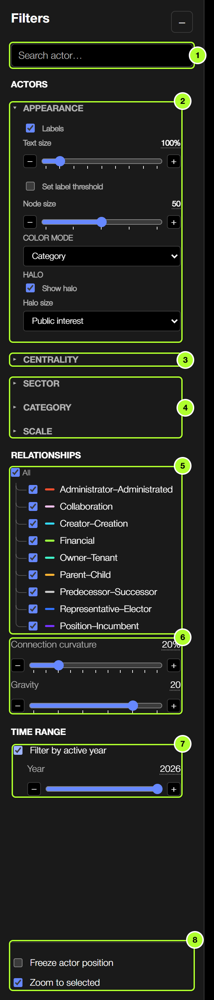
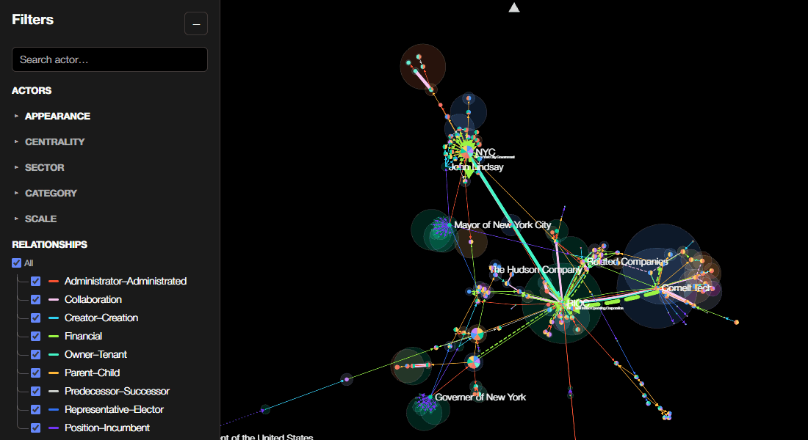
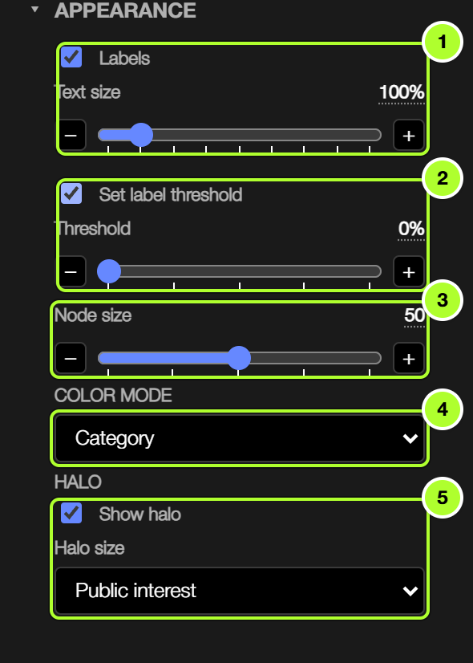
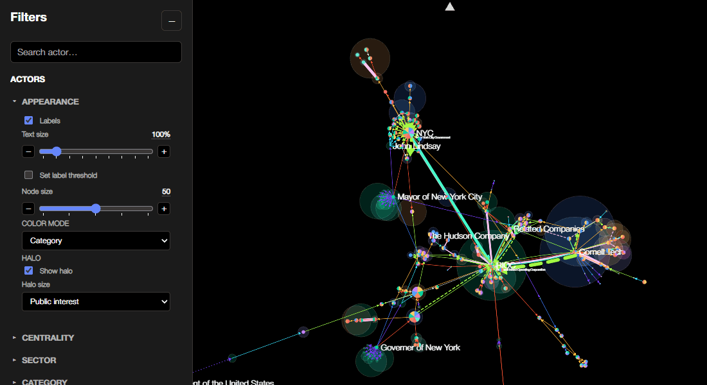
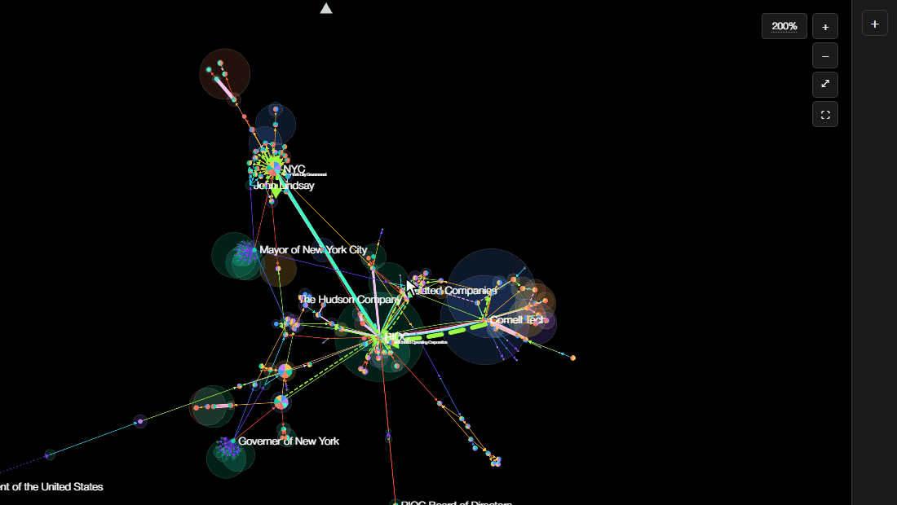
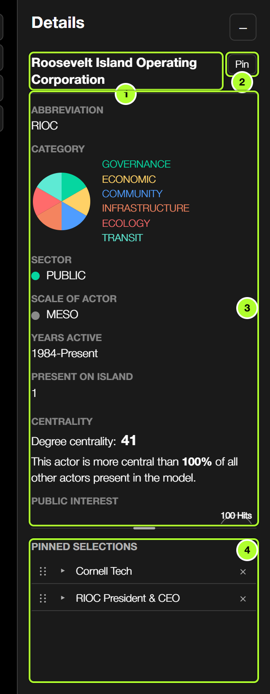
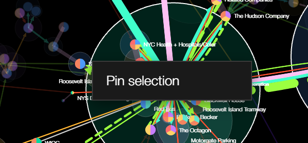
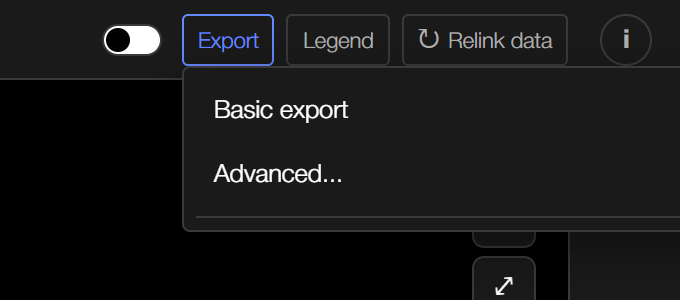
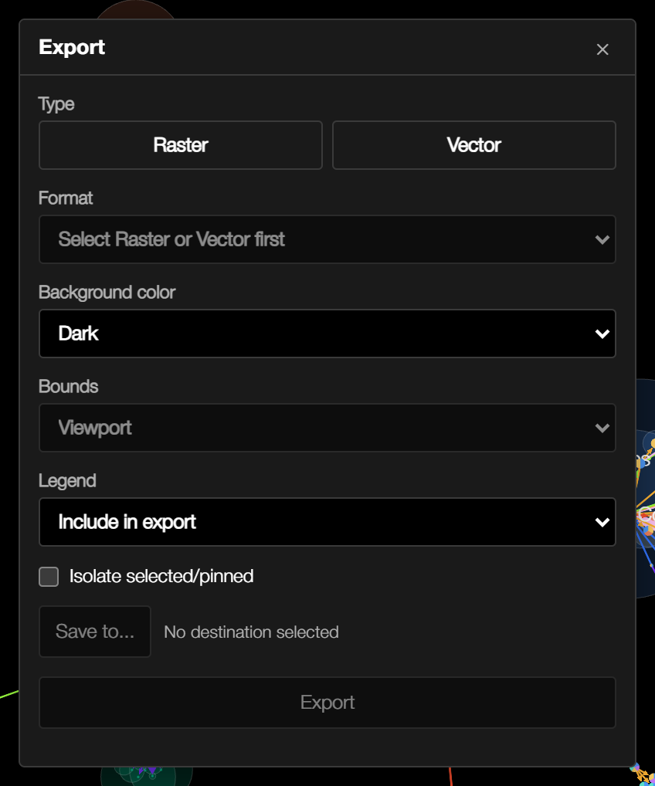

Roosevelt Island: Actor Network
Developed by Anna Cao. Dataset built and populated by Anna Cao, Victoria Li, and Audrey Lau.
Roosevelt Networks is an interactive model of the actors that shape Roosevelt Island (agencies, organizations, institutions, buildings and people) and the relationships between them. This documentation explains how to use the app, how the model is constructed, and how to load your own dataset.
Open the app →


2. Filtering
Filters in the left sidebar control which actors and connections are shown. Click a heading to expand or collapse its group.


- Search: find an actor by full name or abbreviation.
- Appearance: labels, node size, colour and halo (see Appearance).
- Centrality: choose a centrality measure (degree, closeness, betweenness or eigenvector) and hide actors below a minimum score.
- Sector, Category and Scale: tick or untick groups to show or hide their actors. All toggles every group at once.
- Relationships: show or hide each type of connection.
- Connection curvature and layout gravity (how tightly the layout pulls together).
- Time range: turn on Filter by active year to show only the actors active in the chosen year. In Timeline mode, Year range sets the span of years shown.
- Freeze actor position and Zoom to selected (see Selecting + Pinning).
Sliders have − and + buttons for stepping between values, and their value can be clicked to type an exact number.

3. Appearance
The Appearance group at the top of the Filters sidebar controls how the model is drawn:

- Labels: show or hide actor names and set their text size.
- Label threshold: label only the most significant actors.
- Node size: scale every actor up or down. Under Scale, Size nodes by scale makes macro-scale actors larger than micro-scale ones.
- Color mode: colour actors by sector, category or public sentiment, or use a single plain colour. Public sentiment runs from red (negative news headlines) through white to green (positive); grey means no headlines were found.
- Halo: turn the halo around each actor on or off, and choose what its size represents: public interest (how many Google News results mention the actor alongside Roosevelt Island, up to 100) or one of the centrality measures. See how interest and sentiment are measured.

The theme switch in the header toggles light and dark backgrounds.
4. Selecting + Pinning
- Hover over an actor or connection to highlight it and its direct neighbours; everything else fades back.
- Click an actor or connection to select it and show its details in the Details panel. Click empty space to clear the selection.
- Pin a selection to keep it in the Details panel while you explore other actors: use the pin button in the Details panel, or right-click an actor or connection and choose Pin selection. Search results can also be pinned directly.
- Pinned selections stay highlighted in the view. Expand, collapse or unpin them in the Details panel, drag them to reorder, and click a title to zoom to it.
- With Zoom to selected on (bottom of the Filters sidebar), the view moves to each new selection. Freeze actor position stops the layout from moving.
- When the Details panel is collapsed, a dot on its button signals a new selection or pin you haven't looked at yet.



- Current selection: click the title to zoom to it.
- Pin / Unpin the current selection.
- Details: category, sector, scale, years active, centrality, public interest and sentiment, relationships and linked buildings.
- Pinned selections: expand with ▸, drag ⠿ to reorder, × to unpin. Drag the bar above this section to resize it.

5. Exporting
The Export button in the header saves the current view.
- Basic export saves an image of the view immediately.
- Advanced... opens export settings: raster or vector output, resolution, background, whether to export the visible viewport or the whole model, how to include the legend, and whether to export only selected/pinned items or dim everything else.



6. Advanced
Relinking data
The app opens with a bundled snapshot of the dataset. Relink data in the header fetches the latest version of the published spreadsheet and rebuilds the model. Edits to the spreadsheet can take up to five minutes to be published, so if a recent change doesn't appear, wait and relink again.
Importing a custom dataset
The app can also model a different network, as long as its spreadsheet follows the same structure. See Importing custom datasets for the required columns and setup steps, and Methodology for how the model is constructed.